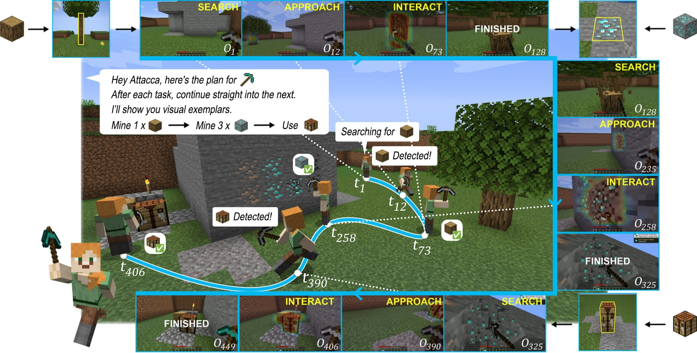
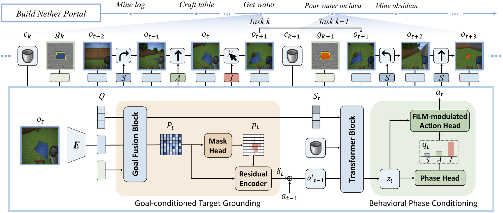
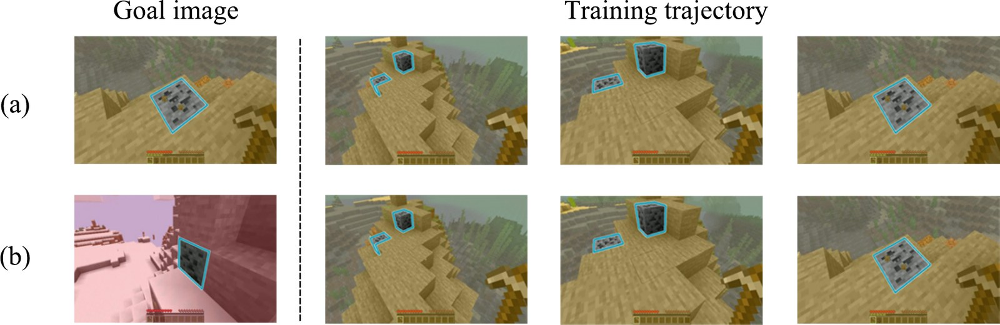
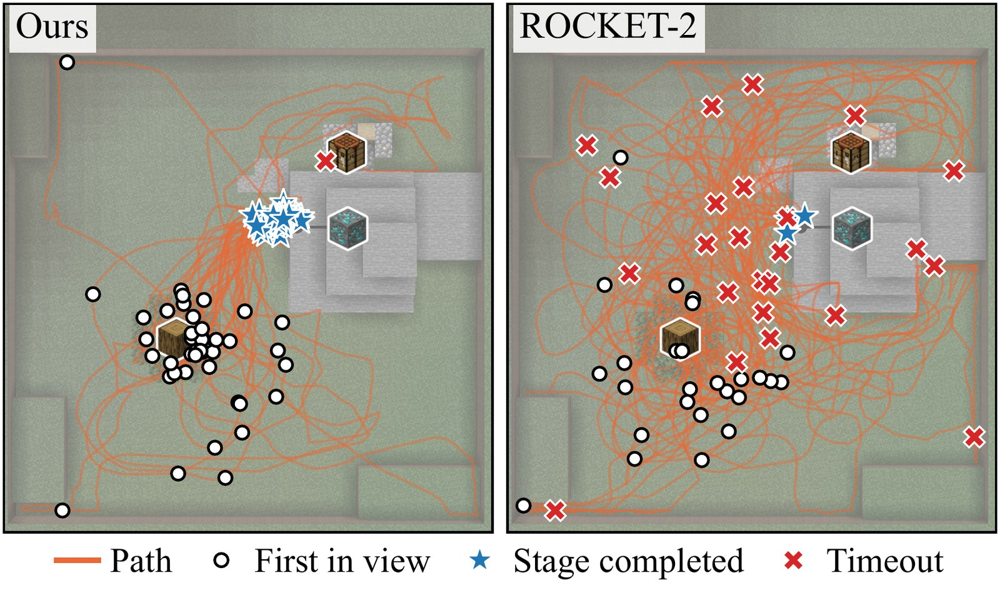
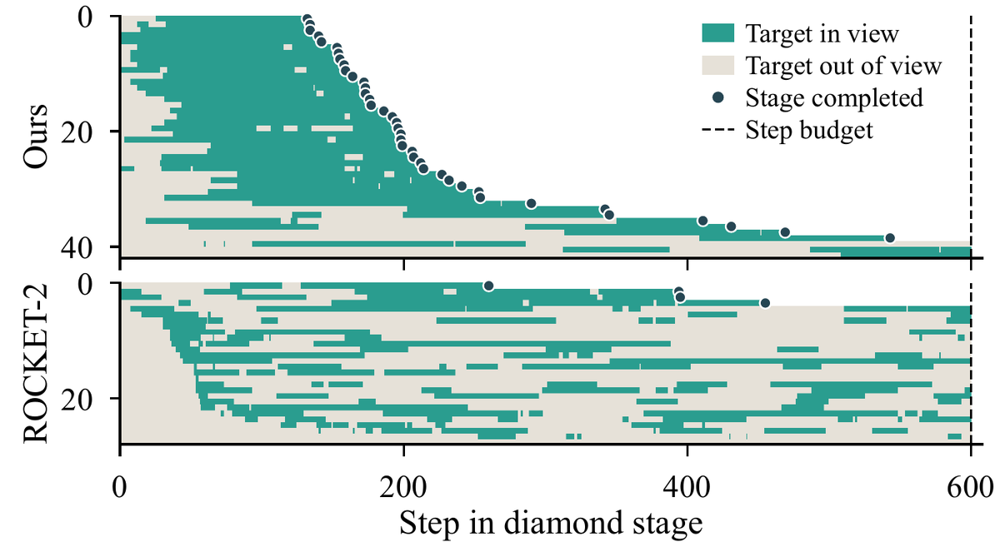

Given a goal image of any world, Attacca finds, approaches, and interacts with the masked target in the goal image.
The heat map is the predicted target mask in the current observation.
TL;DR
- Attacca is a goal-conditioned policy for Minecraft that keeps working when one task ends and the next begins. From whatever state the previous task left, it searches for the next target, approaches it and interacts with it.
- It is trained with goal images from other worlds, a mask head that predicts where the target is in view, and a phase head that tells the policy whether to search, approach or interact.
- It reaches 39.0–47.5% clean success on short tasks, 1.7–2.4× the strongest baseline, and completes 54%, 30% and 28% of three long chains, up to 7× the strongest baseline.
The problem
A good plan still has to be carried out
A planner can name the next subgoal, but the low-level policy still has to start it from wherever the last one ended. We call this the skill hand-off gap.

If the target is initially out of view, the agent must search for it, approach it once found, and interact with it to achieve the task.
-
1
Each task inherits the previous task's end state
After a task ends, the agent may face the wrong way, the world may have changed, and the next target may be out of view. The policy has to find it before it can do anything with it.
-
2
Current policies are tested on short tasks
Visual goal-conditioned policies such as ROCKET-2, STEVE-1 and GROOT are mostly built and evaluated on short tasks where the view changes little, often with the target already in sight.
-
3
Attacca learns the whole progression
We train one policy on demonstrations that go from searching to approaching to interacting, with goal images that never come from the world the agent is acting in.
Method
How Attacca carries a task across the hand-off
Attacca learns the full progression from search to interaction with three components. Goal images come from a different world than the demonstration, a mask head grounds the target in the current view, and a phase head tells the policy whether to search, approach or interact.

-
1
Goals from another world
Each demonstration is paired with a masked goal image of the same target class taken in a different world. The goal shares the target but not the scene or the viewpoint, so the policy is pushed to recognize the target by its appearance rather than by the surrounding scene.
-
2
Where is the target now
A mask head predicts where the target is visible in the current view on a 14×14 patch grid, and an empty mask while it is out of view. A residual encoder adds this prediction to the readout, so actions can depend on where the target is and whether it is in view.
-
3
Search, approach, interact
A phase head predicts which of the three phases the agent is in, and the prediction modulates the readout through FiLM before the action head. The policy can then change how it moves as it goes from finding the target to acting on it.
Target masks and phase labels are used only as training targets. The policy acts on its own predictions and never receives target coordinates or an external detector.

(b) Attacca takes a goal image of the same target class from a different world.
Results
Clear gains on short tasks and long chains
We compare against policies that take text, video, current-view or image goals, on short tasks with held-out target classes and on long chains in one continuous world.
Long chains in one continuous world
Three chains of three to five stages. Every stage starts where the previous one ended, and only the goal image changes. No method is trained on these chains.
Chain success (%), 50 episodes per chain
| Policy | Diamond Pickaxe | Wolf Feeding | Nether Portal |
|---|---|---|---|
| Text goal | |||
| STEVE-1 | 0 | 0 | 0 |
| JARVIS-VLA | 0 | 0 | 0 |
| Video goal | |||
| STEVE-1 | 2 | 0 | 0 |
| GROOT | 0 | 0 | 0 |
| Current-view goal (Molmo + SAM 2) | |||
| ROCKET-1 | 0 | 0 | 0 |
| ROCKET-2 | 0 | 0 | 0 |
| Goal image from another world | |||
| ROCKET-2 (released) | 0 | 0 | 0 |
| ROCKET-2 (fine-tuned) | 8 | 6 | 4 |
| Attacca (ours) | 54 | 30 | 28 |
A chain counts only if every stage succeeds. Crafting, cooking and item handling are scripted in the same way for every method.
Short tasks with held-out targets
Each episode starts with the target out of view among objects of other classes. Three of the ten target classes per task never appear in training.
Clean success (%), average over seen and held-out classes, 200 episodes per task
| Policy | Mine | Hunt | Place |
|---|---|---|---|
| Text goal | |||
| STEVE-1 | 0.5 | 5.5 | 0.0 |
| JARVIS-VLA | 8.0 | 16.5 | 8.5 |
| Video goal | |||
| STEVE-1 | 2.0 | 4.0 | 0.0 |
| GROOT | 1.0 | 4.0 | 0.0 |
| Current-view goal (Molmo + SAM 2) | |||
| ROCKET-1 | 2.0 | 18.0 | 4.5 |
| ROCKET-2 | 5.0 | 20.0 | 1.5 |
| Goal image from another world | |||
| ROCKET-2 (released) | 0.5 | 10.0 | 0.0 |
| ROCKET-2 (fine-tuned) | 23.5 | 18.5 | 22.5 |
| Attacca (ours) | 39.0 | 47.5 | 47.0 |
An episode counts as a clean success only if it reaches the goal without any wrong-class interaction. All baselines except the released ROCKET-2 checkpoint are trained on our demonstrations.
Analysis
Seeing the target is not enough
In the diamond stage of Diamond Pickaxe, the fine-tuned ROCKET-2 sees the diamond ore in 27 of its 28 episodes but finishes only 4 of them. Attacca finishes 39 of 42.


Once Attacca sees the ore, it keeps it in view and its paths converge on it. ROCKET-2 also finds the ore, but loses it again and wanders until the 600-step budget runs out.
ROCKET-2 copies the goal view
ROCKET-2 is trained with goal images from the same world as its demonstrations. Reproducing the goal view works when the goal image was taken right next to the target, and fails otherwise.
Success (%) by goal image, diamond and oak scenarios, 100 episodes per cell
| Policy | Same world, close | Same world, far | Different world |
|---|---|---|---|
| ROCKET-2 (fine-tuned) | 75 | 24 | 30 |
| Attacca (ours) | 89 | 89 | 81 |
Current-view goal
Every 30 steps Molmo is asked to point at the target in the current view, and SAM 2 turns the point into a mask. While the target is out of view there is nothing to point at, so ROCKET-2 has no goal to follow.
Oak log
Diamond ore
Goal image from the execution world
ROCKET-2 (left) tends to reproduce the goal view instead of interacting with the target.
Attacca (right) goes to the target and mines it.
Diamond ore
Oak log
Goal image from a different world
The world the agent acts in is unknown in advance, so this is the setting Attacca is built for.
ROCKET-2 does not reach the target, while Attacca finds it and completes the task.
Diamond ore
Cow
Abstract
A central capability of embodied agents is to accomplish complex objectives through sequences of interdependent tasks. Yet existing visual goal-conditioned policies underlying these agents are typically evaluated on isolated interactions where the target is already visible, and thus do not capture the conditions that arise during continuous long-horizon task execution. In such settings, each task begins from the state left by the previous one: the agent may end at a different position and orientation, the world may have been modified, and the next interaction target may lie outside the current field of view. As a result, agents relying on such policies may struggle to proceed to the next task when they cannot ground their target in the current observation. To address this challenge, we propose Attacca, a new approach that trains visual goal-conditioned policies on complete exploration-to-interaction trajectories using goal images decoupled from the execution environment. Attacca uses context-decoupled goal sampling to pair each demonstration with a class-compatible masked goal image from another world, removing direct scene and pose correspondence. It learns dense current-view grounding through a target-mask prediction head, providing auxiliary supervision beyond action imitation. We further introduce behavioral-phase conditioning that teaches the policy to distinguish Search, Approach, and Interact stages and adapt its control as execution progresses. We evaluate Attacca on multiple short- and long-horizon embodied tasks in Minecraft. Our method achieves 39.0–47.5% clean success, improving over the strongest baseline by 1.7–2.4×. On long-horizon tasks, it attains 54%, 30%, and 28% completion, yielding up to a 7× improvement.
BibTeX
@article{seo2026attacca,
title = {Attacca: Goal-Directed Control under State Continuity for Long-Horizon Embodied Agents},
author = {Seo, Gyusik and Yoon, Jaehong},
journal = {arXiv preprint},
year = {2026}
}